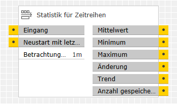
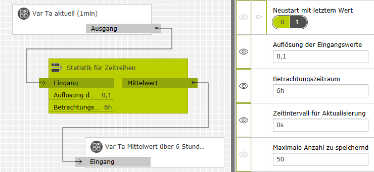

Dieser Baustein berechnet aus den im Laufe der Zeit empfangenen Eingangswerten die folgenden statistischen Größen:
Der Betrachtungszeitraum, auf den sich alle Ausgabewerte (mit Ausnahme des Trends) beziehen, kann dabei in weiten Grenzen frei gewählt werden. Optional können die Eingangswerte gefiltert oder der Ausgang in regelmäßigen Abständen – auch ohne neue Eingangswerte – aktualisiert werden.
Die Eingangswerte müssen nicht in gleichmäßigem zeitlichem Abstand ankommen. Der Baustein interpoliert zwischen den gegebenen Werten linear und extrapoliert nach dem neuesten Wert konstant.
Bezeichnung |
Porttyp |
Beschreibung |
|---|---|---|
|
Eingang |
Number |
Die hier empfangenen Telegrammwerte bilden eine Zeitreihe, deren statistische Kenngrößen der Baustein berechnet. Hinweise:
|
|
Neustart mit letztem Wert |
Binary |
Löscht bei Empfang einer 1 die Zeitreihe der bisher empfangenen Werte. Die Ausgänge ändern sich dadurch wie folgt:
Hinweis: Der Startwert sollte unbestimmt oder 0 sein. |
Bezeichnung |
Porttyp |
Beschreibung |
|---|---|---|
|
Mittelwert |
Number |
Gibt den Mittelwert der Zeitreihe von Eingangswerten innerhalb des gewählten Betrachtungszeitraums aus. Dieser Wert ist auch dann mathematisch korrekt, wenn die Eingangswerte in ungleichen zeitlichen Abständen eintreffen.
Hinweis: |
|
Minimum, Maximum |
Number |
Gibt den kleinsten bzw. größten Wert der Zeitreihe von Eingangswerten innerhalb des gewählten Betrachtungszeitraums aus.
Hinweis: |
|
Änderung |
Number |
Gibt die Differenz zwischen dem ersten und dem aktuellsten Wert der Zeitreihe innerhalb des gewählten Betrachtungszeitraums aus.
Hinweis: |
|
Trend |
Integer |
Gibt die Tendenz der aktuellsten Werte wie folgt aus:
Hinweis: |
|
Anzahl gespeicherter Eingangswerte |
Integer |
Gibt die aktuelle Anzahl gespeicherter Eingangswerte aus.
Hinweis: |
Bezeichnung |
Porttyp |
Als Eingang zuschaltbar? |
Beschreibung |
|---|---|---|---|
|
Auflösung der Eingangswerte |
Number |
nein |
Damit ein Eingangstelegramm verarbeitet wird, muss es sich von den beiden zuletzt verarbeiteten Telegrammen um mindestens diesen Betrag unterscheiden. Man wählt den Wert zweckmäßig so, dass zufällige Schwankungen der Eingabewerte nicht, relevante Änderungen aber sicher verarbeitet werden. Als Richtwert kann in vielen Fällen 1% des zu erwartenden Bereichs der Eingangswerte dienen. |
|
Betrachtungszeitraum |
Timespan |
nein |
Eingangstelegramme gehen nur so lange die Ausgabewerte ein, wie sie nicht älter sind als diese Zeitspanne (im Bereich 5s bis 1 Jahr). Fällt ein alter Eingangswert aus der Zeitspanne heraus, so wird er durch einen neuen, linear interpolierten Wert für den Anfang der Zeitspanne ersetzt. Wird dieser Wert auf 0 gesetzt, dann ist der Betrachtungszeitraum unbegrenzt. In der Regel ist dies nur sinnvoll, wenn der Eingang "Neustart mit letztem Wert" benutzt wird, um regelmäßig alte Werte zu löschen. |
|
Zeitintervall für Aktualisierung |
Timespan |
nein |
Steht dieser Wert auf 0, so werden Ausgänge immer nur dann aktualisiert, wenn ein Eingangstelegramm eintrifft. Dabei spielt es keine Rolle ob der Eingangswert weiter verarbeitet wird oder nicht (siehe Parameter Auflösung der Eingangswerte). Ist dieser Wert größer als 0 (im Bereich 1s bis zur Hälfte des Betrachtungszeitraums), so werden die Ausgänge regelmäßig im gegebenen Zeitabstand aktualisiert, auch wenn keine neuen Eingangswerte eintreffen. Dazu wird der aktuellste Wert konstant extrapoliert. |
|
Maximale Anzahl zu speichernder Eingangswerte |
Integer |
nein |
Der Baustein speichert so viele Eingangswerte, wie hier angegeben (im Bereich 10 bis 2000). In vielen Fällen ist der voreingestellte Wert 50 zweckmäßig. Ist dieser Parameter zu klein gewählt, dann müssen innerhalb des Betrachtungszeitraums – oder zwischen zwei Neustarts – mehr Eingangswerte verarbeitet werden, als gespeichert werden können. In diesem Fall werden ältere Werte gelöscht und zwischen den verbleibenden linear interpoliert. Dadurch werden die Ausgabewerte ungenauer. Andererseits bedeutet ein zu hoher Wert unnötigen Speicherverbrauch. Dies kann bei stark ausgelastetem Systemspeicher (RAM) zu Fehlfunktionen – z. B. unerwarteten Neustarts der Logik – führen. Zu beachten ist dies insbesondere beim L1, der über deutlich weniger Speicher verfügt als der X1.
Hinweis: |
Das Beispiel zeigt die Anwendung des Bausteins in einer außentemperaturgeführten Heizungssteuerung. Die bereitgestellte Wärmeleistung soll nicht direkt von der aktuellen Außentemperatur Ta abhängen, weil das Gebäude eine erhebliche thermische Trägheit hat. Für den tatsächlichen Wärmebedarf ist daher der Mittelwert der Außentemperatur über die letzten 6 Stunden ein besseres Maß.

Der verwendete Außentemperaturfühler sendet seine Temperaturwerte Ta regelmäßig alle 3 Minuten. Daher wird auch der Ausgang "Mittelwert" alle 3 Minuten aktualisiert, ohne dass dazu ein "Zeitintervall für Aktualisierung" angegeben werden müsste. Über 6 Stunden treffen aber ca. 120 Telegramme ein. Um die Zahl der zu verarbeitenden Telegramme sinnvoll zu reduzieren, ist eine "Auflösung der Eingangswerte" von "0,1" °C eingestellt. Dadurch werden von aufeinanderfolgenden fast gleichen Eingangstelegrammen jeweils nur das erste und das letzte verarbeitet. In der Praxis sind dies meist weniger als 50 Telegramme über die 6 Stunden des Betrachtungszeitraums.